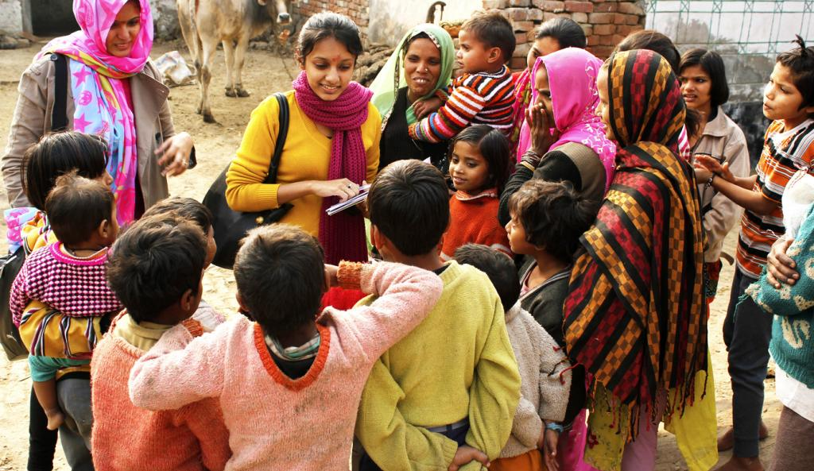

|  |
Manav Seva Sansthan (MSS) is a non-profit non-governmental organisation established in 1987 at Fatehpur in Uttar Pradesh, India.
It believes in itself as ‘a place to serve the people’ and is active in both rural and urban areas of several districts of four States.
Fatehpur is a small city and headquarters of a district by the same name.
It is located midway between Kanpur and Allahabad, two prominent cities of Uttar Pradesh.
Fatehpur district presents a picture of poverty and deprivation.